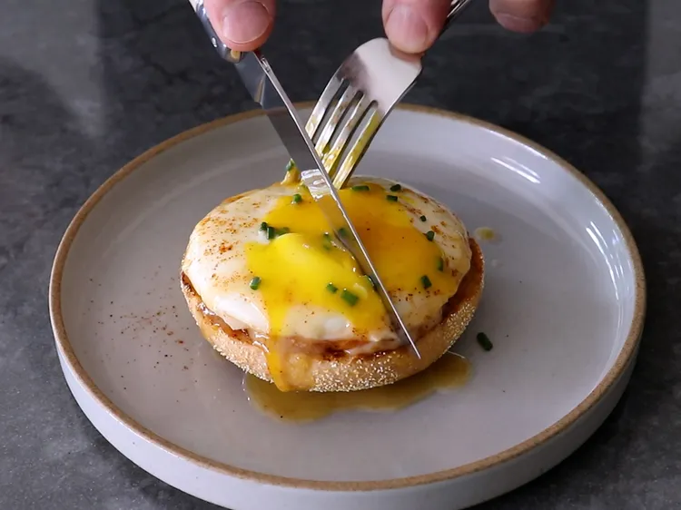

This one-egg Benedict is super-fast and includes a technique for “flat poaching” or steaming an egg. The 1-minute eggless Hollandaise sauce is a bit lighter and thinner, but tastes exactly like the original. This recipe turns a one-egg breakfast into a special-occasion meal with very little effort in a short amount of time. Save the other English muffin half to toast and serve with jam for dessert.
Place toasted English muffin half on a plate. Melt butter in a pan over medium-high heat. Add Canadian bacon and brown lightly on both sides, about one minute. Place on top of English muffin half.
Add egg to the pan along with two tablespoons water, and cover tightly. Let egg steam until it reaches your desired doneness, about one and a half minutes for a runny yolk. doneness. For a neater appearance, the edges of the egg white can be trimmed with a spatula, and tucked underneath the egg. Transfer cooked egg on top of the Canadian bacon, and tent the plate with a piece of foil to keep warm for a minute while you make the sauce.
For sauce, add water and lemon juice to the pan and turn heat to high. Add a pinch each of cayenne and salt, and wait for the liquid to start to simmer. When it does, swirl the pan to deglaze the bottom, and turn off the heat. Add butter pieces, and swirl the pan until butter disappears and sauce emulsifies.
Spoon sauce over egg, and garnish with chives and more cayenne if desired.